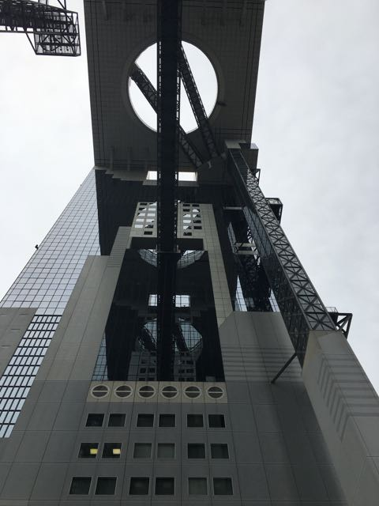
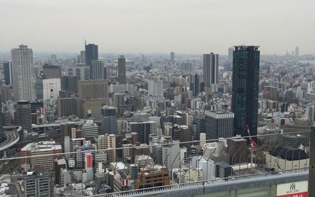
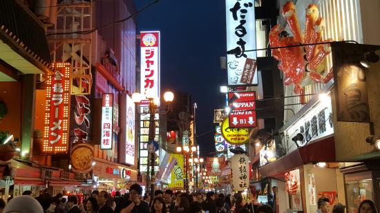
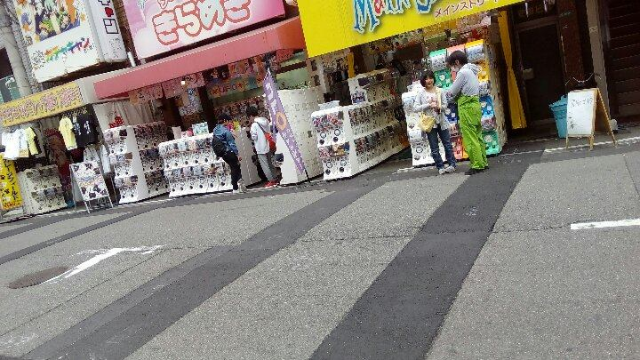
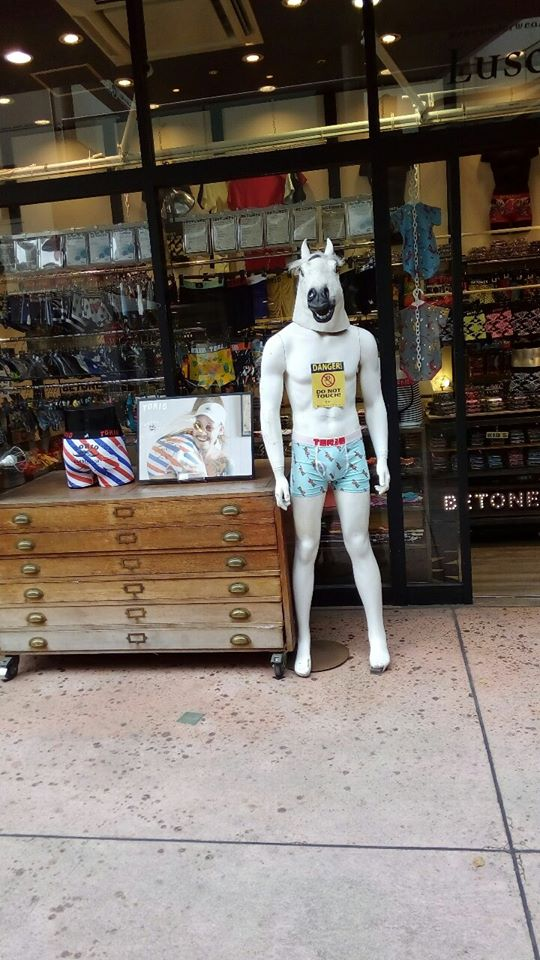
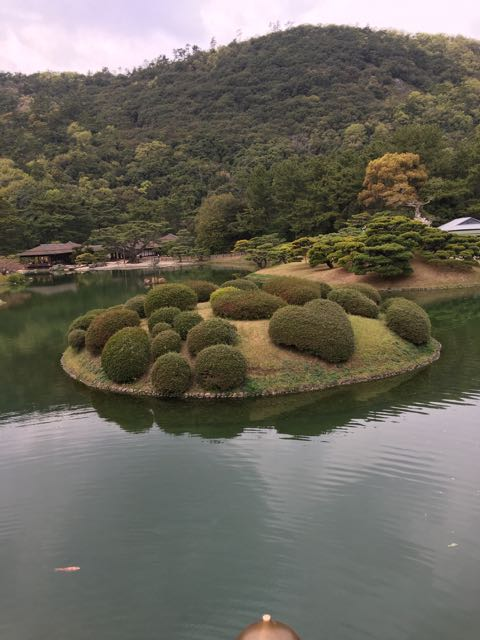
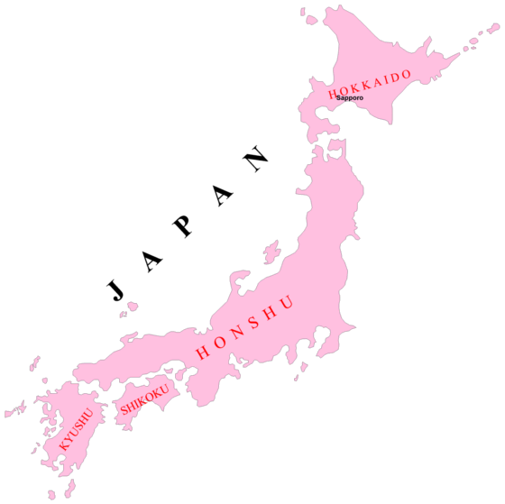

Week 2 and 3
Hello Friends! I know it has been a while but it is time for my weekly update (well week 2 and 3 but let’s just call it a weekly update haha)! As they say “it is better late then never” and boy African time has been hitting me hard. However, I am now in the zone to right this week’s blog! Alrighty, so this week’s post will be about the various places that I have been to Japan thus far. There are a lot of really cool and interesting places to visit in Japan; moreover, I want to highlight some, not all, of the really cool places that I have been to. So without further ado let’s get started!
Osaka
Hello Friends! I know it has been a while but it is time for my weekly update (well week 2 and 3 but let’s just call it a weekly update haha)! As they say “it is better late then never” and boy African time has been hitting me hard. However, I am now in the zone to right this week’s blog! Alrighty, so this week’s post will be about the various places that I have been to Japan thus far. There are a lot of really cool and interesting places to visit in Japan; moreover, I want to highlight some, not all, of the really cool places that I have been to. So without further ado let’s get started!
One enjoyable place to go to in Osaka is the Umeda Sky Building. It is one of the tallest buildings in Osaka and it has an incredible view at the top.
 Dotonbori
Another great place to visit is Dotonbori. Dotonbori is often viewed as the best place to go in Osaka. The streets are adorned with bright lights and there are neon lights laced on every building. It is such a pretty sight. However, there are a bunch of weird things that were in the area (which will be mentioned in the next post).
Nipponbashi (DenDen Town)
This area is also in Osaka and it is considered a “mini” Akihabara. There are so many gaming arcades, electronic stores, manga stores, figurine toy stores, etc. There are also a lot of weird interesting things here (but I will also mention this in my next post……)
 Ritsurin Koen
IMHO Ritsurin Koen is one of the most beautiful places in Japan. Ritsurin Koen, or rather Ritsurin Garden, is located on the Shikoku island. It is a historical garden that is full of Japanese pine trees (Matsu – 松). Here are some pictures of the gorgeous garden.
Islands of Japan
Islands of Japan There are four main islands of Japan. Honshu is the biggest Island where Tokyo, Osaka, Kyoto, and other cities are located. Most of the Japanese population lives on Honshu. The other Islands are Hokkaido, Kyushu, and Shikoku.
Anime Quote of the Week
"The sooner they know the frustration of defeat, the greater their growth will be." – Korosensei
I have grown a lot during my time in Japan. This growth was definitely attributed to all of the failures that I have garnered. You only truly learn from making mistakes. Don't be afraid of putting yourself out there. If you put yourself out there and you succeed that is great! But if you fail that is even better. I have learned so much Japanese, perspectives, and culture that I would have never had access to if I didn't put myself out there. You may be surprised how much you learn from your failures.
Until next time friends. じゃあ、また - Joel Kwaku Owusu Afriyie